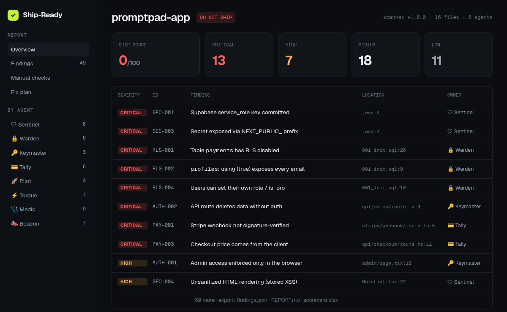

Your tests pass. Your first user will still break it.
Proof leads the Crew. It writes Playwright tests that click through sign-up, login, checkout and cancel like a stranger would, signs a test Stripe webhook to prove payment grants access exactly once, and leaves a GitHub Actions workflow that reruns them on every pull request. On our demo app the scanner said 99/100. Proof found that nobody could sign up.
The money example: a customer cancels and keeps Pro, because the app never handles customer.subscription.deleted. Tally fixes that drift both ways, with signed, idempotent webhooks that write the subscription's real state. Backing it all: a scanner with the same findings every run, file and line on each, and an exit code that fails CI on anything high or critical.
Paying for a security review? Run this first.
Clear the mechanical problems first: tables with RLS off, using (true) read policies, functions signed-out visitors can call, keys in the browser, and webhooks that never revoke access. That way a reviewer's time goes on the hard part: two real accounts trying to cross into each other's data.
The Crew runs those checks locally for $39, writes the tests, and keeps rerunning them on every pull request after the review is done.
The team
⚓Harbor · Launch leadharbor-launch-lead
- Intake: stack, users, money flows, live or not
- Runs
shipready_scan.py, groups findings by owner - Routing table for 30+ symptoms; incident mode for 'we're leaking now'
- Gate 1 before anything touches prod; Gate 2 before launch
- Writes
ship-report.md+ Excel scorecard
🛡Sentinel · Securitysentinel-security-audit
- SEC-001…009: committed keys, service_role JWT decode, public-prefix secrets, .env not ignored, XSS sinks, missing headers, AI endpoints without limits, steering text aimed at AI reviewers
- Key rotation runbook per provider
- OWASP Top 10 map for vibe-coded stacks
🔒Warden · Supabase RLSwarden-supabase-rls
- RLS-001…006 + live SQL check you run in Supabase
- Owner/public/admin/team patterns with
(select auth.uid()) - Column grants that actually work (table revoke + safe re-grant)
- WARDEN-R1…R12 review findings the scanner can't see: roles from user_metadata, open RPC functions, self-join to any team, storage overwrite, no profile row on signup
- Storage policies per operation + signed URLs; service-role key checked in the built bundle
- Two-user drill: 14 attacks with expected results (6 of them also run as Proof API tests), migration + rollback
🔑Keymaster · Authkeymaster-auth
- AUTH-001…005: client-only role checks, unauthenticated routes, getSession on server, open redirects
- @supabase/ssr middleware, callback route, redirect URL config
- Roles in
app_metadataor a locked table, never user_metadata
💳Tally · Stripe paymentstally-stripe-payments
- PAY-001…008: unsigned webhooks, client-side prices, client-set entitlements, missing webhook secret, email matching, non-idempotent handlers, cancellations and failed renewals that never remove access
- Idempotent webhook with
stripe_events - Access-drift matrix: cancel, downgrade, failed card, refund, each with the exact entitlement write
- Entitlements table + go-live checklist
🚀Pilot · Deploypilot-deploy
- DEP-001…005: ignored build errors, missing .env.example vars, no Node pin, no lockfile
- Env var matrix across local/preview/prod
- Domains, preview isolation, rollback rehearsal
⚡Torque · Performancetorque-performance
- PERF-001…006: N+1, unbounded selects, heavy deps, raw
<img> - Index advisor with EXPLAIN evidence
- Bundle diet + Core Web Vitals triage
🩺Medic · Bug triagemedic-bug-triage
- BUG-001…003 + repro template
- Hypothesis → smallest diff → regression test
- AI-loop breaker: checkpoint, diff, narrow prompt
📣Beacon · Launchbeacon-launch-readiness
- LCH-001…007: metadata, robots/sitemap, 404, legal pages, monitoring, analytics
- SMTP + SPF/DKIM/DMARC for auth email
- Launch post drafts per channel
🧪Proof · Launch testsproof-launch-tests
- Playwright tests for the money paths: signup/login, core action, Stripe test checkout, logout, gated pages and APIs
- Signed test webhook + replay check: payment grants access exactly once
- Two-user Supabase RLS drill as API tests: user B can't read, change or delete user A's rows and files
playwright.config.ts+ GitHub Actions workflow you can rerun on every PR- On PromptPad: 10 passing tests and 5 missing-page gaps the scanner couldn't see
How it works
Install in one line
Unzip the download, then in Claude Code: claude plugin install ship-ready-crew --marketplace ./ship-ready-crew. Others: drop the folder or paste the system prompt.
Ask Harbor one question
"Is this app safe to launch?" Harbor maps the app, scans, routes and reports, with every finding owned by one specialist.
Fix, approve, re-scan
Minimal diffs and SQL with rollbacks. You act at the gates. Re-scan until the verdict turns green.
Worked example: PromptPad

49 findings · 13 critical · DO NOT SHIP
1 low, accepted · READY
Included: promptpad-app/ (broken), promptpad-app-fixed/, REPORT-before.md, REPORT-after.md, findings JSON, fixes.patch (~510 lines), filled Excel scorecard and a 6-step walkthrough, including what the example does not prove.
FAQ
I don't know what RLS is. Is this for me?
Yes. Built for people who shipped with Lovable, Bolt, v0 or Cursor and want to know it's safe. Harbor explains every finding in plain English, says why it matters and gives the exact fix. You make the final calls.
Which tools does it work with?
Claude Code installs it in one line as a plugin. The same skills work in Cursor, Codex and other AGENTS.md agents, and as uploadable skills in Claude.ai. ChatGPT, Claude Projects and Gemini get paste-in system prompts.
How do I get it after buying?
You download a ZIP right away. It installs in Claude Code with one line from the unzipped folder, and has every agent folder, per-agent ZIPs for Claude.ai, system prompts for chat apps, the scanner, templates and the worked example. Want updates through Claude Code? Send us your GitHub username and we add you to the private buyer repo.
Can I use it on client projects?
The $39 Crew covers your own apps plus up to 3 client projects a year; studios doing more: contact us. Don't resell or republish the pack.
Is it safe to install?
Yes, and you can check. The packs are plain Markdown skills plus one offline Python scanner you can read. There is no npm package and no install script, so nothing runs when you add it. Worth asking of any skills pack: on 22 Oct GitHub flagged npm versions of two popular skills collections as malware.
Will it change my code without asking?
No. The crew works in your local repo and proposes minimal diffs. Two human gates are built in. Rotating keys, changing dashboards, applying production migrations and deploying are always your call.
How is this different from a checklist or prompt pack?
A checklist tells you what to look for. The Crew does the looking: a deterministic scanner with file:line evidence, a lead agent that routes work to specialists, a score you can track, and a full worked audit so you can see exactly what you'll get.
Checkout is almost ready.
The Crew ($39, one-time) and the Audit ($129 per app) will be available here as soon as the store listing is live. Lite is free now.